Trivy is often described as “a vulnerability scanner for containers.” That is true, but incomplete. In a Kubernetes cluster it can inspect an image, a YAML manifest, a file tree, and a live cluster. It can also run continuously as an operator and publish findings as Kubernetes custom resources.
The important question is not “can it scan?” It is “which layer is this finding coming from, and what decision can I actually make from it?”
I built this lab on my Windows machine to answer that question with real output: a 4-node k3d cluster (1 server + 3 agents), Rancher, an intentionally old nginx:1.19 deployment, the Trivy CLI, Trivy Operator, and Policy Reporter. The lab produced useful CVEs, configuration findings, a synthetic secret detection, Kubernetes-native reports, and a UI that made the reports readable. It also produced a compliance result that contradicted the workload audit, which is exactly the kind of failure a security article should not hide.
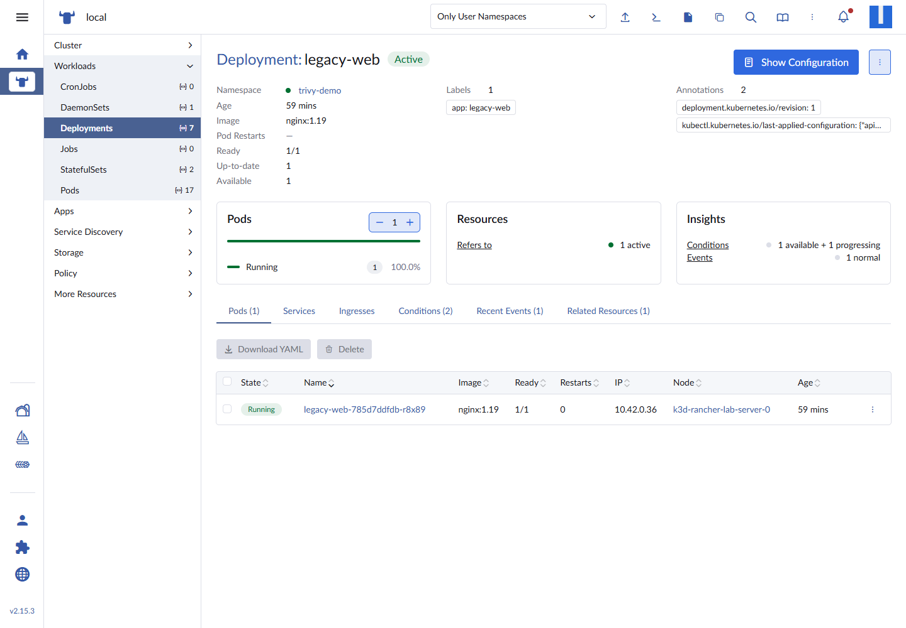
What this lab found
- The
nginx:1.19image is based on Debian 10.9, which is end-of-life. The CLI found 189 HIGH/CRITICAL vulnerabilities; the full severity breakdown was 42 critical, 147 high, 180 medium, 45 low, and 9 unknown. - The
legacy-webDeployment manifest had 3 HIGH misconfigurations: writable root filesystem, default container security context, and a default pod security context that allows root. - A deliberately unsafe fixture that was never applied had 5 HIGH misconfigurations, including host networking, privileged mode, and a hostPath mount.
- A synthetic credentials file produced 2 exposed-secret findings: one critical GitHub token pattern and one high Slack token pattern.
- Trivy Operator generated a
VulnerabilityReportwith 42 critical, 143 high, 175 medium, 27 low, and 36 unknown findings. The small difference from the CLI is expected: the operator chart shipped Trivy0.76.1, while the CLI was0.76.2, and vulnerability databases change between scans. - Policy Reporter turned those CRDs into a usable dashboard: 699 failed results in the aggregate, made up of 515 vulnerability failures, 72 configuration failures, 112 RBAC failures, and 0 secret failures. The UI held 1,694 vulnerability rows because one CVE can appear for multiple packages and ReplicaSets; the aggregate is not a unique-issue count.
- The UI also exposed a critical Stripe secret that the adapter mapped to
warn, so a policy that alerts only onfailwould have missed it. Severity and result are different fields.- The PSS Restricted compliance report claimed 17 PASS / 0 FAIL even though the same workload had 3 high and 4 medium configuration findings. That is a real false-negative risk, not a reason to celebrate a green dashboard.
What Trivy can do, and what it cannot
Trivy is a scanner and report generator. It is not an admission controller, a runtime security monitor, or a vulnerability management program by itself.
- Container CVEs: Trivy scans OS packages and language dependencies in images, filesystems, repositories, and SBOMs. You still need a patch/SLA process and an owner for every image.
- Kubernetes misconfiguration: Built-in checks cover workloads and cluster resources, and custom Rego checks extend them. You still need admission policy if the risky YAML must be prevented from running.
- Exposed secrets: Trivy checks images, file trees, and Kubernetes resources for token and credential patterns. You still need rotation, history cleanup, and a secret manager.
- Supply chain inventory: Trivy produces CycloneDX SBOMs and Kubernetes KBOMs. You still need a trusted registry, signing, provenance, and a retention policy.
- Continuous reports: Trivy Operator watches workloads and generates CRDs. You still need alert routing, triage, expiry, and a human decision.
- Compliance mapping: Trivy maps findings to CIS, NSA, and Pod Security Standards reports. You still need independent control validation; never treat a green summary as an audit certificate.
The official Trivy documentation explicitly describes Kubernetes scanning as experimental, and separates the container image from the Kubernetes resource definition. That distinction matters. An image CVE and a manifest misconfiguration are different problems with different fixes.
Trivy does not:
- block a pod at admission time;
- detect a live process behaving maliciously;
- prove that a workload is compliant just because a control is marked PASS;
- automatically understand your business risk or patch an image;
- replace runtime tools such as Falco, Tetragon, or a managed runtime sensor.
The practical model is:
Trivy finds and reports.
CI and admission policies enforce.
A runtime sensor detects behavior.
Your process decides and tracks.
How the lab fits together
Everything runs from the Windows workstation. The Trivy CLI scans a local nginx:1.19 image, a directory of Kubernetes manifests, and the live k3s API. The Trivy Operator runs inside the cluster with a trivy-server pod that keeps the vulnerability database cached. The operator spawns scan jobs, and those jobs write VulnerabilityReport, ConfigAuditReport, and ExposedSecretReport objects into the Kubernetes API, where Rancher can display them.
The lab versions were:
- k3s
v1.36.5+k3s1 - Rancher
2.15.3 - Trivy CLI
0.76.2 - Trivy Operator chart
0.38.1, operator app0.36.1 - Operator scanner image
aquasec/trivy:0.76.1 - Policy Reporter chart
3.11.2, UI2.9.1, Trivy adapter0.11.5 - Demo image
nginx:1.19, based on Debian10.9
Prerequisites and context lock
I used the existing rancher-lab k3d cluster from my previous k3d/Rancher lab. Before touching anything, confirm the context and node inventory:
kubectl config current-context
k3d cluster list
kubectl get nodes -o wide
The important result was k3d-rancher-lab with four Ready nodes:
NAME STATUS ROLES AGE VERSION
k3d-rancher-lab-agent-0 Ready <none> 24h v1.36.5+k3s1
k3d-rancher-lab-agent-1 Ready <none> 24h v1.36.5+k3s1
k3d-rancher-lab-agent-2 Ready <none> 24h v1.36.5+k3s1
k3d-rancher-lab-server-0 Ready control-plane 24h v1.36.5+k3s1
Do not run cluster-scoped commands until this is correct. In a machine with Rancher, EKS, GKE, and k3d contexts, “the current context looked right” is not a security control.
Step 1: Deploy a deliberately old workload
Create an isolated namespace and apply one small Deployment:
kubectl create namespace trivy-demo
kubectl apply -f .\work\trivy-lab\manifests\demo.yaml
kubectl -n trivy-demo rollout status deploy/legacy-web --timeout=120s
kubectl -n trivy-demo get deploy,pods -o wide
The manifest is intentionally simple:
apiVersion: v1
kind: Namespace
metadata:
name: trivy-demo
---
apiVersion: apps/v1
kind: Deployment
metadata:
name: legacy-web
namespace: trivy-demo
labels:
app: legacy-web
spec:
replicas: 1
selector:
matchLabels:
app: legacy-web
template:
metadata:
labels:
app: legacy-web
spec:
containers:
- name: web
image: nginx:1.19
ports:
- containerPort: 80
The workload is Ready, but “Ready” only means Kubernetes can run it. It says nothing about the age of the base image or the security context.
Step 2: Install a pinned Trivy CLI
I pinned the CLI instead of using a moving latest download:
$version = "0.76.2"
$dest = "$PWD\work\trivy-lab\bin"
$zip = "$PWD\work\trivy-lab\trivy_${version}_Windows-64bit.zip"
New-Item -ItemType Directory -Force $dest | Out-Null
Invoke-WebRequest `
"https://github.com/aquasecurity/trivy/releases/download/v${version}/trivy_${version}_Windows-64bit.zip" `
-OutFile $zip
Expand-Archive $zip -DestinationPath $dest -Force
.\work\trivy-lab\bin\trivy.exe --version
Version: 0.76.2
Pin the version in your CI image or runner too. A scanner that changes silently is another uncontrolled dependency in the supply chain.
Step 3: Scan the image before it becomes a mystery
Run the image scan:
.\work\trivy-lab\bin\trivy.exe image nginx:1.19 `
--scanners vuln `
--skip-version-check `
--timeout 15m
The relevant output was:
nginx:1.19 (debian 10.9)
Total: 189 (HIGH: 147, CRITICAL: 42)
Trivy also warned that Debian 10.9 is no longer supported by the distribution, so vulnerability detection may be insufficient because security updates are no longer provided. That is not a cosmetic warning. An EOL base image is a lifecycle problem that no amount of scanning can fix.
The findings included fixable package issues such as CVE-2022-1664 in dpkg. The existence of a fixed version is useful triage data: it means rebuilding on a newer image is a concrete action, not a research project.
A useful image gate is therefore:
.\work\trivy-lab\bin\trivy.exe image nginx:1.19 `
--scanners vuln `
--severity CRITICAL,HIGH `
--exit-code 1 `
--skip-version-check
--exit-code 1 turns findings into a failing CI step. It does not decide which findings are acceptable; that remains an explicit policy choice.
Step 4: Scan the manifest before applying it
Image scanning cannot see a privileged container, a hostPath mount, or a missing security context. Scan the YAML separately:
.\work\trivy-lab\bin\trivy.exe config .\work\trivy-lab\manifests `
--severity HIGH,CRITICAL `
--skip-version-check
The two local files produced different results:
demo.yaml kubernetes 3 misconfigurations
insecure-pod.yaml kubernetes 5 misconfigurations
The normal demo.yaml findings were all HIGH:
KSV-0014: the container root filesystem is not read-only.KSV-0118: the container uses the default security context.KSV-0118: the pod uses a default security context that can allow root privileges.
I also created a deliberately unsafe fixture, but did not apply it:
apiVersion: v1
kind: Pod
metadata:
name: deliberately-insecure
namespace: trivy-demo
spec:
hostNetwork: true
containers:
- name: shell
image: busybox:latest
securityContext:
privileged: true
allowPrivilegeEscalation: true
volumeMounts:
- name: host-root
mountPath: /host
volumes:
- name: host-root
hostPath:
path: /
Scanning that fixture returned five HIGH findings, including:
KSV-0009: host network enabled.KSV-0017: privileged container.KSV-0121: hostPath volume mounted from/.
Keeping a bad fixture in a scan target is useful because it proves the check is live. Applying it to the cluster is a different decision and should be deliberate. Trivy reports the risk; it does not stop the pod.
Step 5: Detect exposed secrets without committing real ones
I created a synthetic credentials file and scanned only for secrets:
.\work\trivy-lab\bin\trivy.exe fs .\work\trivy-lab\fixtures `
--scanners secret `
--severity HIGH,CRITICAL `
--skip-version-check
The fixture contained fake token patterns, never real credentials:
GITHUB_TOKEN=<synthetic GitHub token pattern>
SLACK_TOKEN=<synthetic Slack token pattern>
Trivy found:
fake-secrets.env text 2
Total: 2 (UNKNOWN: 0, LOW: 0, MEDIUM: 0, HIGH: 1, CRITICAL: 1)
The GitHub token pattern was CRITICAL and the Slack token pattern was HIGH. The output redacts the matched values, which is useful, but the presence of the file is still the incident. Rotate first, remove history second, and move the value to a secret manager third.
Do not test this with a real token. A scanner log, CI artifact, or screenshot can leak the value again.
Step 6: Scan the live namespace
The CLI can also scan the running cluster. Use the explicit context and namespace:
.\work\trivy-lab\bin\trivy.exe k8s k3d-rancher-lab `
--include-namespaces trivy-demo `
--report summary `
--skip-version-check `
--timeout 15m
The real workload summary was:
Workload Assessment
Namespace Resource Vulnerabilities Misconfigurations
trivy-demo Deployment/legacy-web C42 H147 M180 L45 U9
That is useful, but it reinforces the earlier lesson: this view is dominated by the image. The manifest-specific findings are clearer with trivy config or with the operator’s ConfigAuditReport. Do not assume one summary contains every layer.
Step 7: Generate an SBOM and KBOM, then read the caveat
Generate a CycloneDX image SBOM:
.\work\trivy-lab\bin\trivy.exe image nginx:1.19 `
--format cyclonedx `
--output .\work\trivy-lab\scan-output\nginx-1.19.cdx.json
Generate a Kubernetes KBOM:
.\work\trivy-lab\bin\trivy.exe k8s k3d-rancher-lab `
--format cyclonedx `
--output .\work\trivy-lab\scan-output\cluster-kbom.cdx.json
Two traps matter here.
First, --format cyclonedx disables vulnerability scanning unless you explicitly add --scanners vuln. If you want vulnerabilities in the generated inventory, say so.
Second, scanning the KBOM back with Trivy produced this warning:
Detected OS family="k3s" version="v1.36.5+k3s1"
Unsupported os family="k3s"
The KBOM was still generated, but the follow-up vulnerability result was not a meaningful k3s package audit. A zero result with an “unsupported OS” warning is not a clean bill of health. Vendor distributions need their own package and advisory mapping.
Step 8: Add Trivy Operator for continuous reports
The CLI is excellent for CI and investigations. The operator is what makes findings visible inside Kubernetes.
The lab installed chart 0.38.1, which deployed operator 0.36.1 into trivy-system and scoped scans to trivy-demo:
helm repo add aqua https://aquasecurity.github.io/helm-charts/
helm repo update
helm upgrade --install trivy-operator aqua/trivy-operator `
--namespace trivy-system `
--create-namespace `
--version 0.38.1 `
-f .\work\trivy-lab\operator-values.yaml `
--wait --timeout 10m
The final values I used were:
targetNamespaces: trivy-demo
operator:
builtInTrivyServer: true
scanJobTimeout: 30m
scanJobsConcurrentLimit: 2
trivy:
timeout: 30m
resources:
requests:
cpu: 200m
memory: 256M
limits:
cpu: 1
memory: 1Gi
server:
resources:
requests:
cpu: 300m
memory: 512Mi
limits:
cpu: 2
memory: 2Gi
The first install did not work with the chart defaults. The scan job timed out at five minutes while pulling the Trivy database. Setting a longer timeout helped, but the scanner still spent a long time downloading the optional Java database. On this connection, the 951 MB Java index was the bottleneck.
I tried trivy.skipJavaDBUpdate: true, which is logical for a non-Java nginx image. It failed with:
The first run cannot skip downloading Java DB
'--skip-java-db-update' cannot be specified on the first run
That is a real Trivy constraint: a fresh cache cannot skip the database, even if the target image has no Java components. The final design uses the chart’s built-in Trivy server and a persistent 5 GB PVC so the database cache is not thrown away with every scan job. The server’s first start also tripped its liveness probe during the initial download, restarted once, and then became Ready.
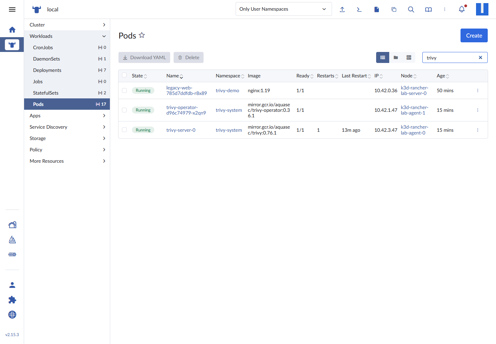
The operator watches workload changes and creates reports automatically. It is not a scheduled cron-only scanner; a new pod or workload change can trigger reconciliation. The compliance reports have a separate cron schedule.
Step 9: Read the Kubernetes-native reports
List the report resources:
kubectl get vulnerabilityreports,configauditreports,exposedsecretreports `
--all-namespaces
The vulnerability report was tied to the ReplicaSet and container:
NAMESPACE NAME REPOSITORY TAG SCANNER
trivy-demo replicaset-legacy-web-785d7ddfdb-web library/nginx 1.19 Trivy
The Rancher list makes the severity split easy to scan:
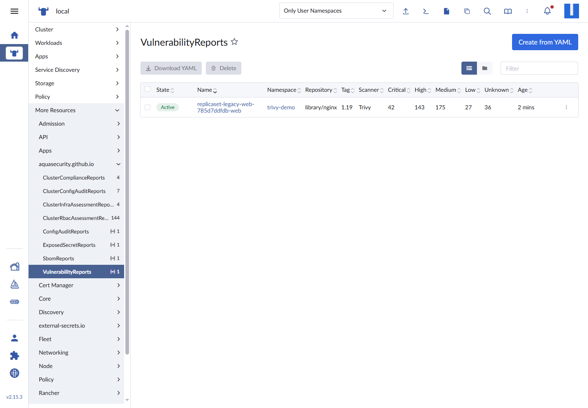
The detail view is a Kubernetes custom resource, not a purpose-built CVE UI. Rancher exposes the report as structured YAML, including the artifact digest, OS, scanner version, summary, and vulnerability entries.
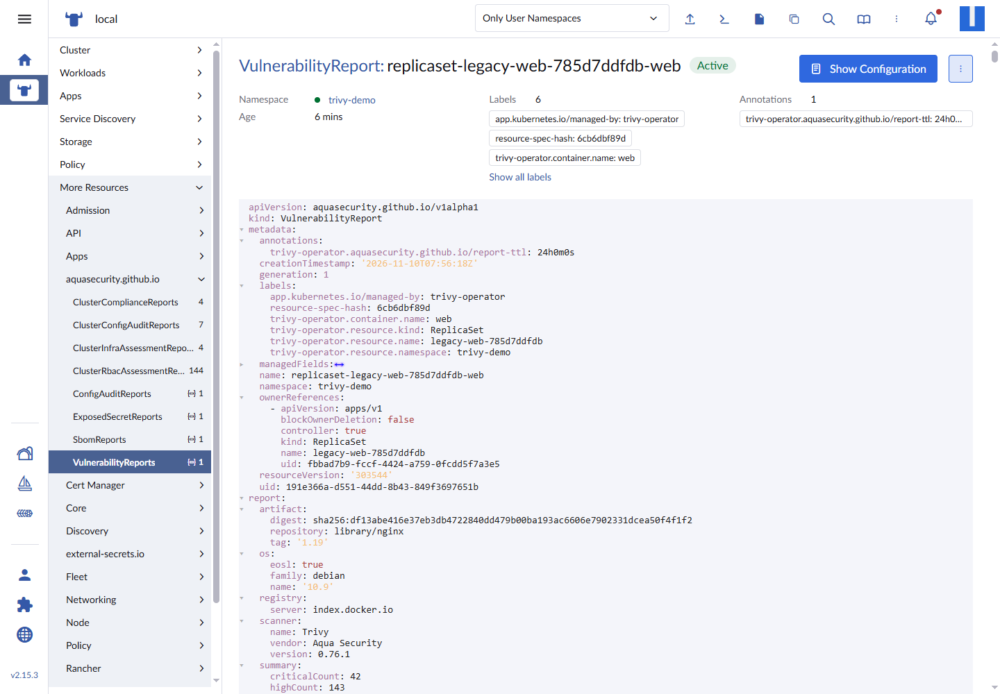
To inspect the summary without the full JSON:
$report = kubectl get vulnerabilityreport `
-n trivy-demo `
replicaset-legacy-web-785d7ddfdb-web `
-o json | ConvertFrom-Json
$report.report.summary | Format-List
criticalCount : 42
highCount : 143
mediumCount : 175
lowCount : 27
unknownCount : 36
The ConfigAuditReport answers a different question: what is wrong with the workload definition?
kubectl get configauditreport -n trivy-demo
NAME SCANNER AGE
replicaset-legacy-web-785d7ddfdb Trivy 43m
The Rancher list shows 0 critical, 3 high, 4 medium, and 10 low findings:
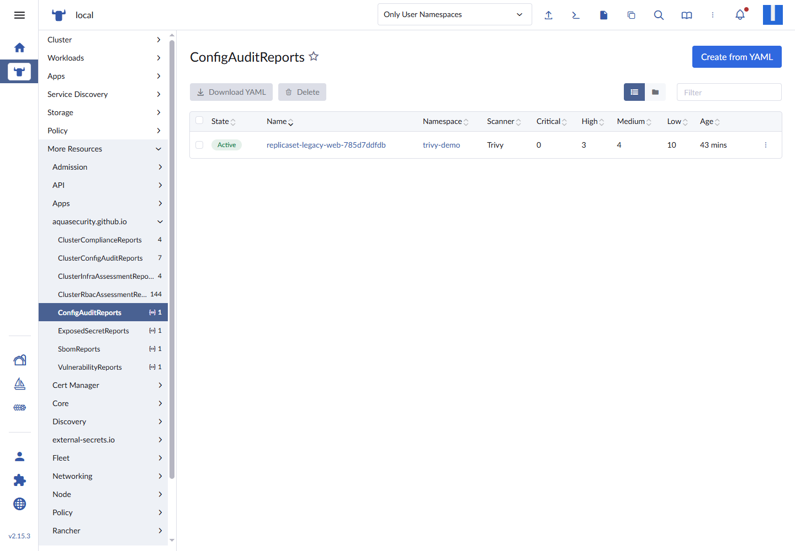
The failed checks included:
- root filesystem is not read-only;
- container runs as root;
- default security context is used;
- privilege escalation can be enabled;
- seccomp is not set;
- CPU and memory requests/limits are missing;
- capabilities are not dropped.
This is the layer that should drive your Pod Security Standards or admission policy. An image update will not fix these.
The operator also generated an ExposedSecretReport for the image. It was clean:
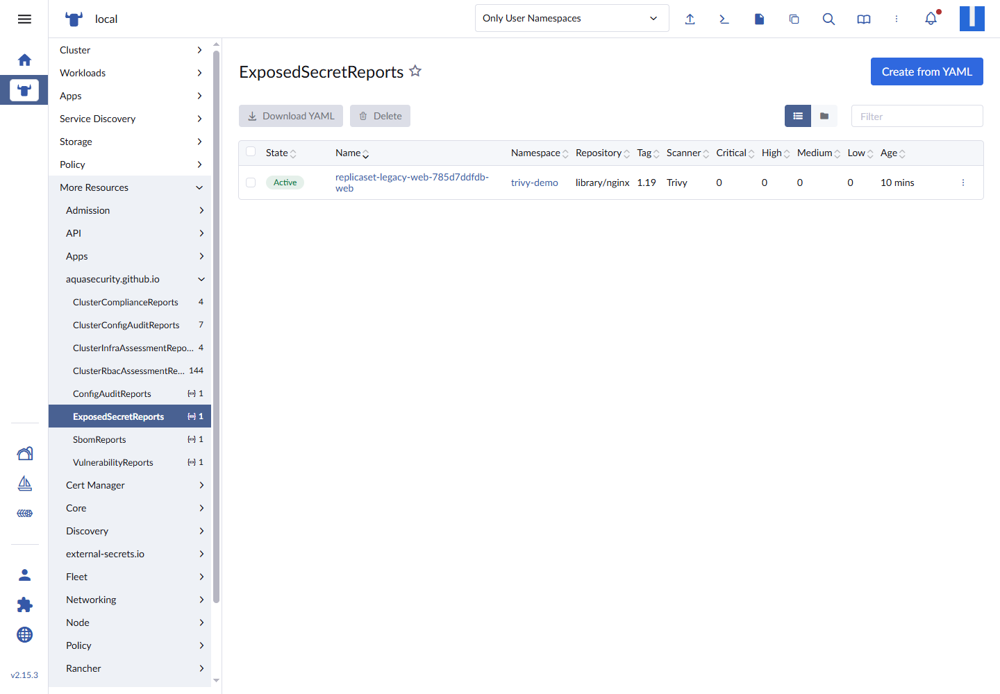
That result does not contradict the earlier synthetic file scan. The operator scanned the nginx:1.19 image and its Kubernetes resources, not my local fake-secrets.env fixture. Scan scope matters more than a generic “Trivy found secrets” statement.
Step 10: Add Policy Reporter for a real UI
Trivy Operator does not ship a UI. It ships a report API. Rancher can display the raw custom resources, but a generic YAML browser is not a triage workflow:
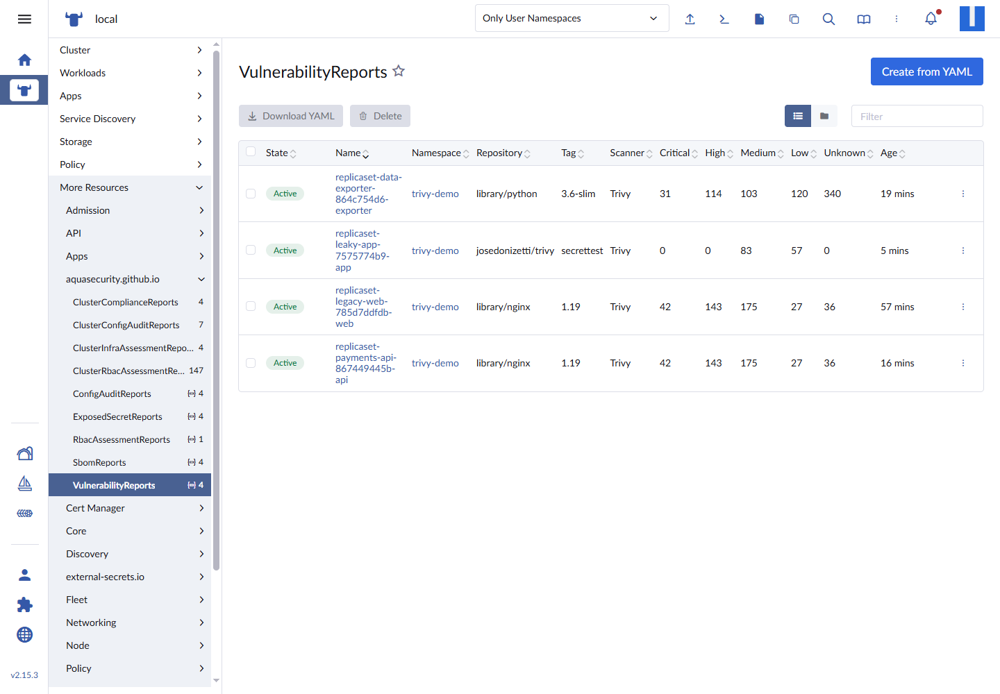
There is no CVE search, no owner, no suppression, and no cross-source view. Policy Reporter fills that gap. The pipeline is: workload change → scan Job → report CRD → adapter → PolicyReport → UI.
The adapter is the part people skip. Trivy Operator emits its own CRDs; Policy Reporter consumes the Kubernetes Policy Working Group's PolicyReport format. Without the adapter, the UI has nothing to display.
The versions in this lab were:
- Policy Reporter chart
3.11.2, UI2.9.1 - Trivy Operator PolicyReport adapter
0.11.5
Install the adapter first, because it can also install the PolicyReport CRDs:
# adapter-values.yaml
crds:
install: true
adapters:
vulnerabilityReports:
enabled: true
configAuditReports:
enabled: true
rbacAssessmentReports:
enabled: true
exposedSecretReports:
enabled: true
complianceReports:
enabled: true
infraAssessmentReports:
enabled: true
clusterInfraAssessmentReports:
enabled: true
helm repo add policy-reporter https://kyverno.github.io/policy-reporter
helm repo add trivy-operator-polr-adapter https://fjogeleit.github.io/trivy-operator-polr-adapter
helm repo update
helm upgrade --install trivy-operator-polr-adapter trivy-operator-polr-adapter/trivy-operator-polr-adapter `
-n policy-reporter --create-namespace `
-f .\work\trivy-lab\adapter-values.yaml --wait
Then install the core with the UI:
# policy-reporter-values.yaml
ui:
enabled: true
ingress:
enabled: true
className: traefik
hosts:
- host: policy-reporter.127.0.0.1.nip.io
paths:
- path: /
pathType: Prefix
metrics:
enabled: true
helm upgrade --install policy-reporter policy-reporter/policy-reporter `
-n policy-reporter `
-f .\work\trivy-lab\policy-reporter-values.yaml `
--wait --timeout 5m
I did this in the opposite order first. The core crash-looped with:
no valid reporting API group found in the cluster
The missing dependency was the PolicyReport CRD. Installing the adapter with crds.install=true created the API, and the core recovered on its next restart. If a controller says it cannot find a reporting API, check the CRDs before debugging the UI.
For the screenshots I used a port-forward because the local browser blocked the .nip.io host:
kubectl -n policy-reporter port-forward svc/policy-reporter-ui 8082:8080
Open http://localhost:8082. The left navigation maps directly to the report types:
- Dashboard — aggregate counts across sources.
- Trivy Vulnerability — image CVEs.
- Trivy ConfigAudit — workload and resource configuration checks.
- Trivy ExposedSecrets — secrets found inside images.
- Trivy RbacAssessment — Roles and ClusterRoles.
Each tab accepts the same basic controls: a result filter, a Kinds filter, and a search box.
Step 11: Read every UI tab
The UI was populated by four workloads in trivy-demo:
payments-api—nginx:1.19, privileged, host network, host PID, hostPath, root.legacy-web—nginx:1.19, the original workload from Step 1.data-exporter—python:3.6-slim, a language runtime with a different CVE profile.leaky-app—josedonizetti/trivy:secrettest, a public test image containing a synthetic Stripe key.
Dashboard: what the 699 means
The landing page is an aggregate, not a unique-issue count:
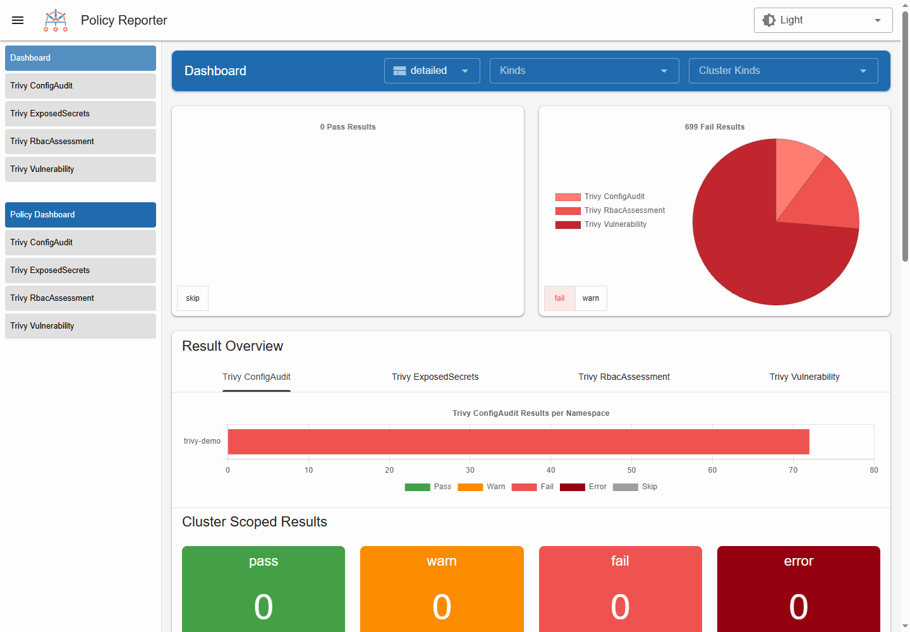
The 699 fail total decomposes exactly:
- 515 vulnerability failures from the four scans: 185 + 185 + 145 + 0.
- 72 configuration failures: 23 + 17 + 16 + 16.
- 112 RBAC failures: 111 cluster-scoped plus 1 namespace Role.
- 0 secret failures: both secret findings are mapped to
warn.
A number like 699 is not "699 problems to fix." It is 699 report results, many of them duplicates across package versions, ReplicaSets, or related checks. Move from the aggregate to one source tab, then to one resource.
Trivy Vulnerability tab
The Vulnerability tab shows 1,694 results:
payments-api: 423legacy-web: 423data-exporter: 708leaky-app: 140
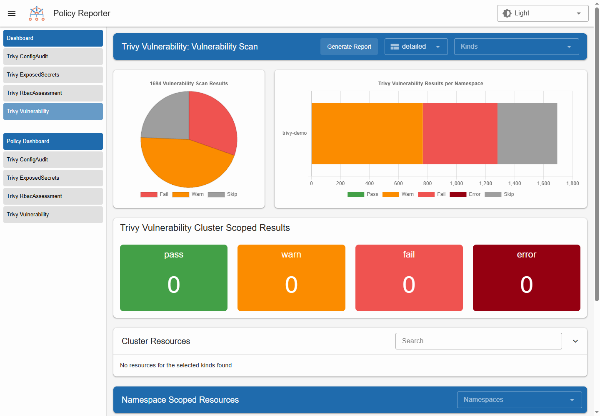
The page mixes fail, warn, and skip. Skip is not pass. A skip usually means the scanner could not evaluate the finding, the package is not applicable, or the result is outside the selected scope. Treating skip as success is how a dashboard becomes misleading.
The 1,694 rows are also not 1,694 unique CVEs. The same CVE can appear for multiple package instances, and the same image can appear in more than one ReplicaSet. The source VulnerabilityReport is the authoritative per-image object; the UI is an index over those objects.
Drilling into one workload
Opening payments-api shows the distribution clearly:
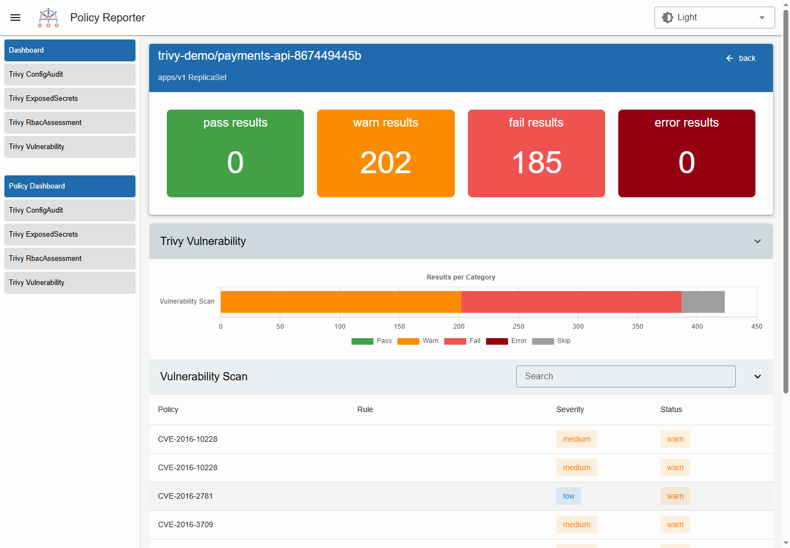
fail results 185
warn results 202
error results 0
pass results 0
The table is the useful part: CVE ID, severity, and status. The severity comes from Trivy; the status comes from the PolicyReport mapping. They are different fields.
Behind that screen is a VulnerabilityReport:
kubectl -n trivy-demo get vulnerabilityreport replicaset-payments-api-867449445b-api -o json
{"criticalCount":42,"highCount":143,"mediumCount":175,"lowCount":27,"unknownCount":36}
The first package rows included:
CVE-2022-32221 CRITICAL curl 7.64.0-4+deb10u4
CVE-2021-22946 HIGH curl 7.64.0-3+deb10u3
CVE-2021-37600 MEDIUM bsdutils 2.33.1-0.1+deb10u1
CVE-2016-2781 LOW coreutils
What this tab answers: which running workload has CVEs, and what are they? It does not tell you whether the vulnerable package is reachable, whether the workload processes untrusted input, or whether the image is actually deployed in production.
Trivy ConfigAudit tab
The ConfigAudit tab shows 72 failures, all configuration checks:
payments-api: 23legacy-web: 17data-exporter: 16leaky-app: 16
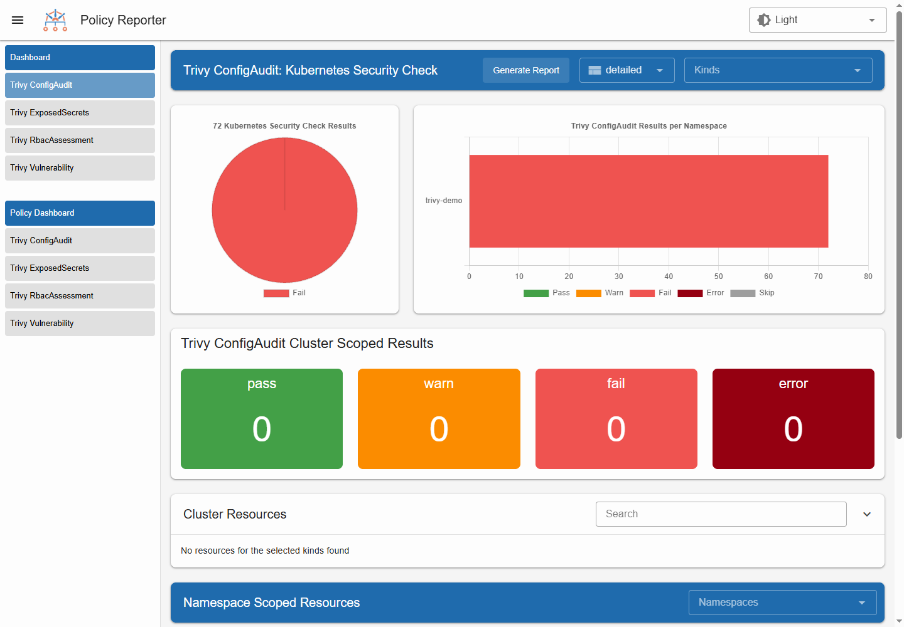
This is the highest-signal view for a Kubernetes security review because it tells you what the workload is allowed to do, not just what packages it contains.
Drilling into payments-api
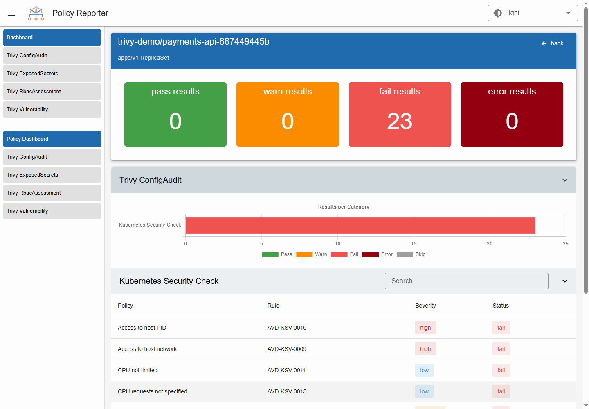
The high-severity checks were:
Access to host PID AVD-KSV-0010 high
Access to host network AVD-KSV-0009 high
Default security context configured AVD-KSV-0118 high
Privileged AVD-KSV-0017 high
SYS_ADMIN capability added AVD-KSV-0005 high
Root file system is not read-only AVD-KSV-0014 high
Kubernetes resource with disallowed volumes AVD-KSV-0121 high
The same screen also shows medium and low findings: hostPath mounted, seccomp disabled, runs as root, CPU and memory limits missing. One screen connects "what the manifest says" to "why it matters."
Behind the screen is a ConfigAuditReport with the same check IDs and remediations. The UI is a reader over that report, not a separate scanner. It does not tell you whether the Pod actually behaved maliciously; that is runtime security.
Trivy ExposedSecrets tab
The ExposedSecrets tab shows 2 results for the test image:
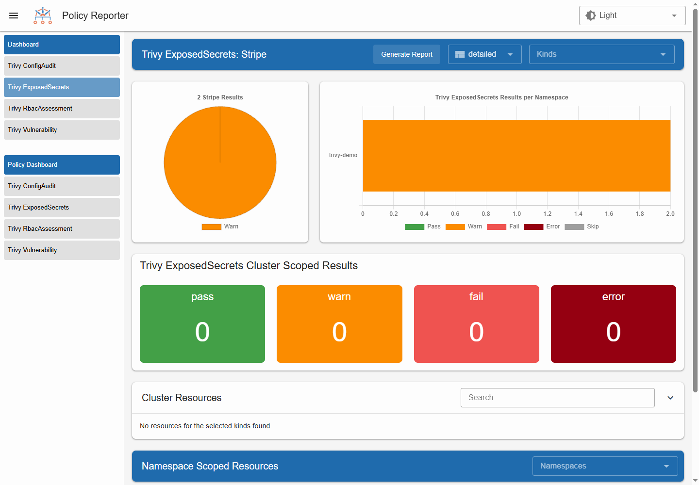
Both are warn, even though one is a critical Stripe secret:
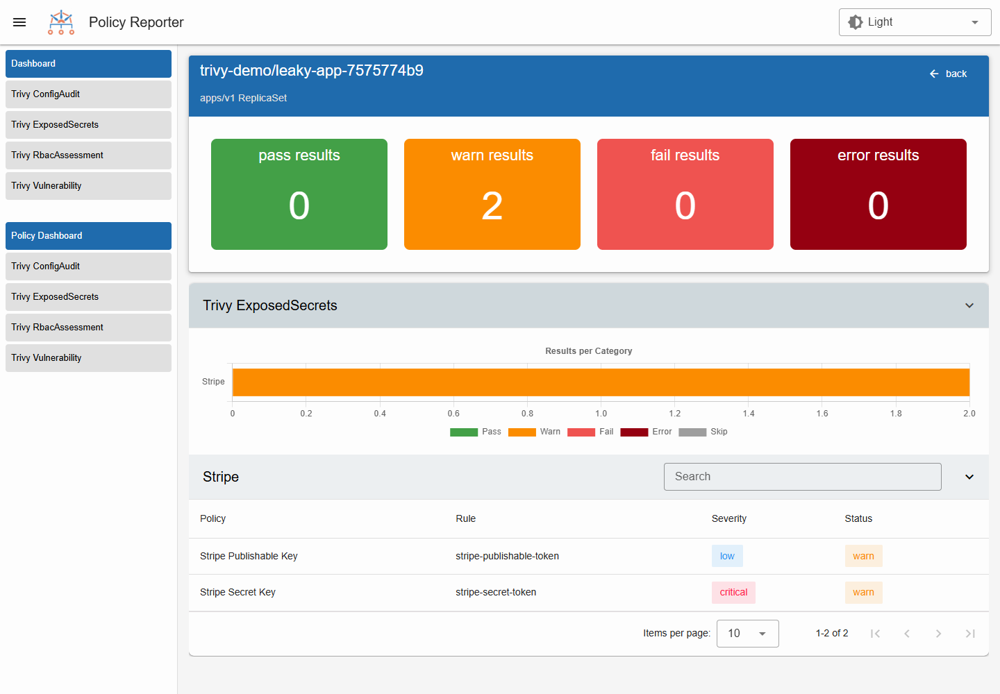
The report behind it:
secrets:
- category: Stripe
ruleID: stripe-secret-token
title: Stripe Secret Key
severity: CRITICAL
target: /app/config/secret.yaml
match: ' secret_key: **************************************'
- category: Stripe
ruleID: stripe-publishable-token
title: Stripe Publishable Key
severity: LOW
target: /app/config/secret.yaml
Three points matter:
- The value is masked. The operator is not a secret-recovery tool.
- The adapter maps both findings to
result: warn, so a policy that only routesfailwill miss a critical secret. - The scanner is image/content-based. Environment variables in the Deployment did not produce an
ExposedSecretReportin this lab. A Kubernetes Secret object is a different exposure problem, handled by RBAC and etcd encryption.
This tab answers did an image ship with a credential in its filesystem? It does not tell you whether the credential is still valid. If it is real, rotate it. Deleting the workload does not invalidate the key.
Trivy RbacAssessment tab
The RbacAssessment tab shows 112 failures: 111 from cluster-scoped roles and 1 from a namespace Role.
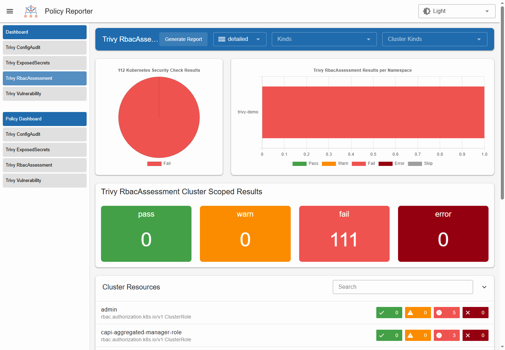
The cluster list is noisy because Trivy scans roles that existed before this lab. Use the search box to narrow to the role you care about. Opening the lab's support-admin ClusterRole shows why the tab is worth checking:
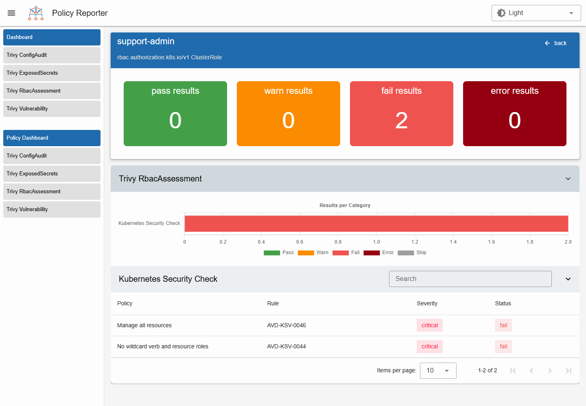
checks:
- checkID: AVD-KSV-0046
title: Manage all resources
severity: CRITICAL
remediation: Remove '*' from 'rules.resources'.
- checkID: AVD-KSV-0044
title: No wildcard verb and resource roles
severity: CRITICAL
remediation: Create a role which does not permit wildcard verb on wildcard resource.
summary:
criticalCount: 2
The namespace Role secret-reader produced a medium result instead:
checkID: AVD-KSV-0113
title: Manage namespace secrets
severity: MEDIUM
This tab answers which identities can do too much? It does not tell you who actually used that permission. For that you need Kubernetes audit logs.
Status semantics: the part that trips people up
The UI shows two different concepts that look similar:
- Severity comes from Trivy:
CRITICAL,HIGH,MEDIUM,LOW,UNKNOWN. - Result comes from the PolicyReport mapping:
fail,warn,pass,error,skip.
They do not have to agree. In this lab, a critical Stripe secret was mapped to warn. That is why the dashboard's fail total was 699 while the secret tab showed two findings outside that number.
skip is not pass. A skipped check can mean the scanner could not evaluate it, the resource kind is out of scope, or the policy does not apply. Read the result column, not just the color.
There is also a time dimension:
- Reports are snapshots tied to a resource revision or a scheduled compliance run.
scannerReportTTLwas24h; old ReplicaSet reports can remain after a rollout.- Compliance ran on a six-hour cron in this lab.
- The PSS report showed
17 PASS / 0 FAILeven after a privileged workload was created, because the report predated the workload.
A green compliance panel is not a live control. Check the timestamp and the scope.
Metrics and Grafana
The UI is for reading individual findings. Metrics are for trends and alerting. The operator exposes Prometheus metrics on port 8080:
kubectl -n trivy-system port-forward deploy/trivy-operator 8081:8080
curl.exe http://localhost:8081/metrics
Real samples:
trivy_image_vulnerabilities{...,image_repository="library/nginx",image_tag="1.19",...severity="Critical"} 42
trivy_image_exposedsecrets{...,image_repository="josedonizetti/trivy",image_tag="secrettest",...severity="Critical"} 1
trivy_cluster_compliance{...,status="Fail",title="Kubernetes Pod Security Standards - Restricted"} 0
Useful queries:
sum by (namespace, resource_name) (trivy_image_vulnerabilities{severity="Critical"})
sum by (namespace, image_repository, image_tag) (trivy_image_exposedsecrets{severity="Critical"})
sum by (title, status) (trivy_cluster_compliance)
For a Grafana view, the official dashboard ID is 17813. That gives time series and alerting; it does not replace the per-finding tabs.
What the UI reveals about the operator
The tabs are only half the lesson. The report counts expose how the operator works.
Reports follow ReplicaSets, not Deployments
A Pod template change creates a new ReplicaSet, which creates a new report. That is why the same image can appear more than once, and why old reports can linger after a rollout. Filter by namespace and resource, and use the report TTL as part of your retention policy.
targetNamespaces does not scope everything
The operator was configured with targetNamespaces: trivy-demo, but the RBAC tab still showed 111 cluster-scoped failures. Workload scanning is namespaced; cluster-scoped RBAC assessment is not. Plan for that volume.
Client/server scanning cannot read node-local images
I built a local test image and imported it into the k3d nodes. The scan job failed:
unable to find the specified image "lab/leaky-app:1.0" in ["docker" "containerd" "podman" "remote"]
containerd socket not found: /run/containerd/containerd.sock
The operator's Trivy server pulls images; it does not read the kubelet's containerd store. A k3d image import makes an image runnable, not pullable by the scanner. Push it to a reachable registry, or change the scan architecture deliberately.
The operator reports; it does not prevent
Every bad workload in this lab was already running before its report existed. If a resource must never run, use admission policy such as Kyverno or Gatekeeper. The operator is the continuous backstop for drift, legacy workloads, and manual kubectl changes.
The UI needs authentication
Policy Reporter exposes namespace names, image names, CVEs, and RBAC posture. The lab UI had no authentication because it was local. In production, put OIDC or an authenticated proxy in front of it.
What each tab is best at
- Dashboard — a health summary, not a work queue.
- Vulnerability — image ownership and patch planning.
- ConfigAudit — workload hardening and admission-policy design.
- ExposedSecrets — incident response and credential rotation.
- RbacAssessment — privilege review and least-privilege cleanup.
The fastest useful loop is: start at the Dashboard, pick the source with the highest fail count, filter to one namespace, open one resource, then trace the finding back to its CRD with kubectl.
Step 12: The compliance report can be wrong
The operator registered four compliance reports:
k8s-cis-1.23k8s-nsa-1.0k8s-pss-baseline-0.1k8s-pss-restricted-0.1
The initial Rancher view had blank failure/pass columns. The operator’s compliance updater is tied to a cron schedule, so the report definitions existed before their first summary run. I forced a run by temporarily changing the PSS reports to a one-minute schedule:
kubectl patch clustercompliancereport k8s-pss-baseline-0.1 `
--type merge -p '{"spec":{"cron":"* * * * *"}}'
kubectl patch clustercompliancereport k8s-pss-restricted-0.1 `
--type merge -p '{"spec":{"cron":"* * * * *"}}'
After the run, the operator reported:
k8s-pss-baseline-0.1 PASS 11 FAIL 0
k8s-pss-restricted-0.1 PASS 17 FAIL 0
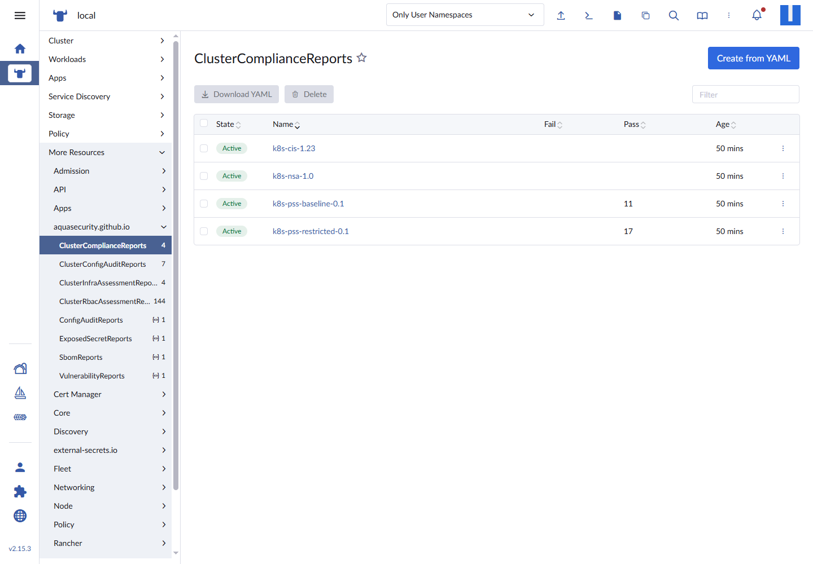
That looks excellent until you compare it with the ConfigAuditReport:
ConfigAuditReport: 3 HIGH, 4 MEDIUM, 10 LOW
PSS Restricted: 17 PASS, 0 FAIL
The same legacy-web workload is running as root, has a writable root filesystem, and does not enforce a seccomp profile. A restricted Pod Security profile should not be a clean pass.
I am not treating that as “the workload is fine because the dashboard is green.” In the pinned versions used here, the PSS compliance summary did not reflect the workload-level findings that ConfigAuditReport exposed. Possible causes include report scope, check mapping, summary semantics, or an operator/version bug. The exact cause matters less than the operational rule:
A green compliance report is evidence to investigate, not proof of compliance.
Use compliance reports as a control-mapping layer. Cross-check the controls against workload config audits, admission policy, and an independent test. Never put a compliance dashboard on a screen and assume it is a security guarantee.
Restore the normal schedule after the one-off run:
kubectl patch clustercompliancereport k8s-pss-baseline-0.1 `
--type merge -p '{"spec":{"cron":"0 */6 * * *"}}'
kubectl patch clustercompliancereport k8s-pss-restricted-0.1 `
--type merge -p '{"spec":{"cron":"0 */6 * * *"}}'
Triage: turn a report into an action
A finding is not a decision. A workable triage flow is:
- Fix the image lifecycle first. Replace EOL base images and rebuild on a maintained parent. Re-scan after the rebuild; do not assume the tag pulled an updated digest.
- Fix workload security context next. Set
runAsNonRoot,allowPrivilegeEscalation: false, dropALLcapabilities, use a read-only root filesystem where the app allows it, and set a seccomp profile. - Separate fixed from unfixed.
fixedVersiontells you whether a package update is available. Unknown and unfixed findings need ownership and a time-bound exception, not silent suppression. - Gate CI. Fail builds on critical or high image findings, and scan manifests before deployment. Keep an explicit allowlist with expiry.
- Enforce at admission. Use Kyverno or Gatekeeper to require the same controls you scan for. Trivy can tell you a pod is privileged; admission can stop it from running.
- Watch runtime. Use Falco or a managed sensor for behavior after the container starts. A clean image scan does not detect a compromised process.
- Keep the reports visible. Route operator findings to your alerting system and give each exception an owner, reason, and expiration date.
A useful rule for suppressions is:
No suppression without an owner, a justification, and an expiry date.
trivyignore is a scanner input, not an approval workflow.
CI, admission, and runtime are different controls
The easiest mistake is to install a scanner and assume the cluster is now “secure.”
- Build: A Trivy image scan with
--exit-code 1catches known CVEs and exposed secrets in the built artifact. It does not catch a bad Kubernetes manifest. - Pre-deploy:
trivy configplus review catches privileged pods, hostPath mounts, and weak security contexts. It does not catch a live runtime compromise. - Admission: Kyverno or Gatekeeper prevents disallowed configurations from being deployed. It does not remove a CVE already inside an allowed image.
- Runtime: Falco, Tetragon, or a managed sensor catches suspicious syscalls, shell execution, and network behavior. It does not prove that an unexercised vulnerable package is safe.
- Continuous inventory: Trivy Operator catches new workload findings as resources change. It does not provide business context or automatic remediation.
A production program needs all five, with an owner for each signal.
Troubleshooting notes from the real lab
These are the issues I hit, not theoretical warnings:
- Operator scan timeout at five minutes. The default
operator.scanJobTimeoutandtrivy.timeoutwere too short for the first database download. I raised both to30m. - Java DB download dominates a small image scan. The first run downloaded a 951 MB Java index even though the image was nginx. A fresh pod cannot skip it on the first run. The built-in Trivy server with a persistent PVC is the cache-friendly design.
- The Trivy server can restart during first DB download. Its liveness probe failed while the cache was being populated, then it recovered. Check events before assuming the server is broken.
--contextis not a Trivyk8sflag. The context is positional:trivy k8s k3d-rancher-lab ....--include-namespaceschanges the result set. If a scope looks empty, verify the flag and the cluster context before concluding there are no findings.- CycloneDX can disable vulnerability scanning. Add
--scanners vulnif you want vulnerabilities in that output. - k3s is not a supported OS family for KBOM package matching. A zero result with an unsupported-OS warning is not a clean audit.
- Compliance status can lag. The CRDs can exist before the cron-driven summary runs.
- Compliance can disagree with ConfigAudit. Validate the mapping and do not trust a green count blindly.
Production checklist
- Pin the Trivy CLI, operator chart, operator image, and scanner image.
- Mirror the Trivy DB and Java DB in restricted or air-gapped environments.
- Use a persistent cache for the operator or Trivy server; size it for both databases.
- Scope
targetNamespacesinstead of scanning every namespace by default. - Set report TTLs and storage expectations; CRDs are not free.
- Put an admission controller in front of workloads that must meet PSS.
- Route critical/high findings to an owner and an alert channel.
- Require expiry dates for suppressions and exceptions.
- Re-scan after every image rebuild, not just after a source-code change.
- Keep Rancher and the operator API private; reports describe exploitable weaknesses.
- Validate compliance results independently; do not make a dashboard the control.
- Add runtime detection because scanning is point-in-time.
Cleanup
Remove the UI and the extra workloads first:
helm uninstall policy-reporter -n policy-reporter
helm uninstall trivy-operator-polr-adapter -n policy-reporter
kubectl delete namespace policy-reporter
kubectl -n trivy-demo delete deployment payments-api data-exporter leaky-app
kubectl delete clusterrolebinding support-bot-support-admin
kubectl delete clusterrole support-admin
kubectl -n trivy-demo delete rolebinding support-bot-secret-reader
kubectl -n trivy-demo delete role secret-reader
kubectl -n trivy-demo delete serviceaccount support-bot
kubectl -n trivy-demo delete configmap payments-config
Then remove the demo namespace and the operator:
kubectl delete namespace trivy-demo
helm uninstall trivy-operator -n trivy-system
The Helm uninstall removes the operator resources, but CRDs may remain depending on the chart and cluster. Check before deleting them:
kubectl get crd | Select-String 'aquasecurity'
kubectl get clustercompliancereports
Do not delete a namespace or CRD just because its name matches something you saw in a tutorial. Confirm the current context and the resources first.
What I would keep
Trivy earned a place in the workflow, but not as a single “security” checkbox. The useful pattern is:
- CLI scans in CI for fast feedback;
- manifest scans before apply;
- Operator reports for continuous inventory;
- Policy Reporter for triage and a shared view;
- admission policy for enforcement;
- runtime detection for behavior;
- a triage process that turns findings into owned actions.
The most important result from this lab was not the 42 critical CVEs. It was the contradiction between the Restricted compliance summary and the workload audit. That is what a security report looks like in the real world: useful, incomplete, and sometimes wrong. The engineer still has to verify the layers and make the decision.